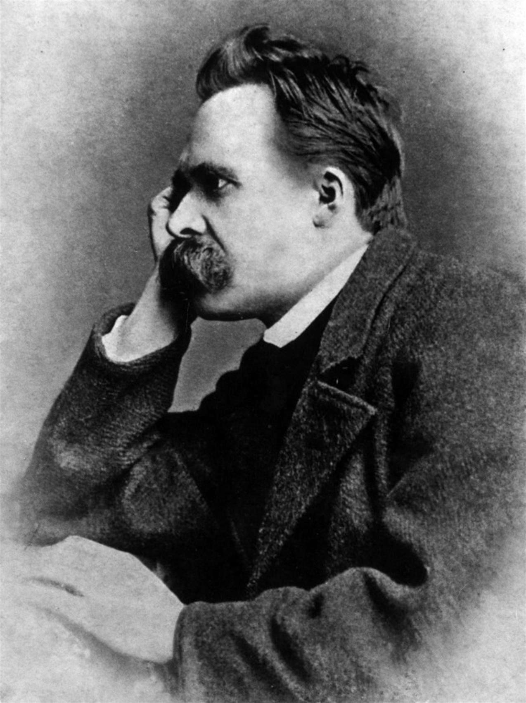

Nietzsche
Friedrich Nietzsche · 1844–1900
«Ciò che non mi uccide mi rende più forte»
- Volontà di potenza
- Superuomo
- Eterno ritorno
- Critica morale
💬La massima
Buongiorno Alberto. Oggi tocca a Friedrich Nietzsche: il filosofo che ha preferito la vertigine alla consolazione.
🖼️ Ritratto (foto di Gustav Adolf Schultze, Naumburg, settembre 1882 — pubblico dominio):
"Aus der Kriegsschule des Lebens. — Was mich nicht umbringt, macht mich stärker." "Dalla scuola di guerra della vita: ciò che non mi uccide mi rende più forte." (Tratto da Il crepuscolo degli idoli, sezione «Aforismi e saette», aforisma 8; scritto nel 1888, pubblicato all'inizio del 1889. Attribuzione certa: non è una di quelle citazioni apocrife che girano in rete.)
📄Cosa vuole dire
Letta sui social, la frase sembra una ricetta di resilienza: "sopporta il dolore e diventi più forte". Nel contesto dice qualcosa di più scomodo. La formula completa parla di una scuola di guerra: la vita non è un percorso lineare da compiere, ma un allenamento che ti frusta. E non si tratta di subire passivamente — si tratta di prendere ciò che ti ferisce e trasformarlo in materia per crescere.
Nietzsche parlava per esperienza diretta. Visse con emicranie terribili, vomiti, una vista quasi cieca, mesi interi a letto; e proprio in quei periodi di bassa vitalità, racconta in Ecce Homo, smise di essere un pessimista: l'istinto di autoconservazione gli proibì di restare fedele "a una filosofia della povertà e della disperazione".
Tre idee in una frase. La massima condensa tre idee portanti del suo pensiero: l'amor fati (dire sì anche al destino più amaro), la volontà di potenza come superamento di sé, e il rifiuto della rassegnazione che aveva assorbito dal giovane Schopenhauer.
📄Chi era
Nato a Röcken il 15 ottobre 1844, figlio di un pastore luterano; morto a Weimar il 25 agosto 1900. Filologo prodigio: a ventiquattro anni (1869) ottiene la cattedra all'Università di Basilea senza aver neppure finito la tesi. Amicizia appassionata e rottura con Wagner (per Parsifal e per il nazionalismo di Bayreuth).
Le opere e il crollo. Opere chiave: La nascita della tragedia (1872), Umano, troppo umano (1878), La gaia scienza (1882, con la "morte di Dio"), Così parlò Zarathustra (1883-85), Al di là del bene e del male (1886), Genealogia della morale (1887), Il crepuscolo degli idoli e L'anticristo (1888).
Il crollo. Poi il collasso: Torino, 3 gennaio 1889, abbraccia in piazza Carlo Alberto un cavallo frustato dal cocchiere. Undici anni di follia, morto a Weimar.
📌Sintesi del pensiero
- La morte di Dio: non un trionfo ateo, ma la constatazione che i valori che reggevano l'Occidente hanno perso ogni presa → nichilismo da attraversare, non da accettare.
- La volontà di potenza: non desiderio di dominio sugli altri, ma spinta a crescere, ordinarsi, darsi forma.
- L'oltre-uomo (Übermensch): chi crea valori propri invece di ereditarli ciecamente.
- L'eterno ritorno: esperimento mentale — rivivresti identico ogni istante della tua vita?
- L'amor fati, il dionisiaco e l'apollineo, la critica alla morale ("da padroni" contro "da schiavi"), la filosofia "con il martello".
⌛Contesto storico
- Ha ricevuto: il pessimismo di Schopenhauer, il romanticismo tedesco e il wagnerismo (poi abbandonati con risentimento), la filologia classica tedesca, il darwinismo (che criticò aspramente), i presocratici — in primo luogo Eraclito — e Dostoevskij, "l'unico psicologo" secondo lui.
- Ha trasmesso: il vitalismo (Dilthey, Bergson), l'esistenzialismo (Jaspers, Heidegger, Sartre, Camus), il post-strutturalismo e la filosofia della differenza (Foucault, Deleuze, Derrida).
- Un fraintendimento da smontare: la sorella Elisabeth Förster-Nietzsche, sposa di un antisemita convinto, curò l'archivio e pubblicò compilazioni postume (La volontà di potenza, 1901) piegandole in senso nazionalista e antisemita — idee che Nietzsche disprezzava apertamente nei suoi appunti.
🧠Quiz
Rispondi pure in chat con la combinazione, es. 1B 2A 3C 4B 5C.
1 Da quale opera proviene la nostra massima, e in che anno fu scritta?
- A Così parlò Zarathustra, 1883
- B La gaia scienza, 1882
- C Il crepuscolo degli idoli, 1888
- D Ecce Homo, 1889
2 Quale titolo originale tedesco ha Il crepuscolo degli idoli?
- A Götzen-Dämmerung
- B Die fröhliche Wissenschaft
- C Der Antichrist
- D Menschliches, Allzumenschliches
3 Che cos'è la "volontà di potenza" in Nietzsche?
- A La brama di dominio politico sugli altri
- B L'istinto di conservazione della specie
- C La spinta a crescere, darsi forma e superarsi
- D La forza fisica dei corpi
4 Quale episodio è legato al collasso che pose fine alla sua vita attiva?
- A Una caduta da cavallo nella neve
- B L'abbraccio a un cavallo frustato, a Torino
- C Un ictus durante una lezione a Basilea
- D L'avvelenamento da mercurio somministrato come cura
5 Chi curò in modo discutibile l'opera postuma, alimentando letture distorte?
- A Cosima Wagner
- B Il critico Georg Brandes
- C La sorella Elisabeth Förster-Nietzsche
- D Il filologo Ulrich von Wilamowitz-Moellendorff
✅Soluzioni — tocca per vedere
- C — Aforisma 8 di «Aforismi e saette»; il testo si apre proprio con "Dalla scuola di guerra della vita".
- A — Götzen-Dämmerung, parodia del Götterdämmerung wagneriano; il "Götze" (idolo) è il falso dio che il filosofo interroga col martello.
- C — Potenza come auto-superamento, non come comando sugli altri.
- B — Torino, piazza Carlo Alberto, 3 gennaio 1889.
- C — Elisabeth selezionò e rimaneggiò gli appunti secondo le sue idee, creando l'immagine distorta di un Nietzsche nazionalista e antisemita.
🔁Ripasso
- Data della massima: l'errore classico è attribuirla a Zarathustra o al "pensiero positivo" moderno. È del 1888, quando Nietzsche aveva quarantaquattro anni e scriveva febbrilmente, non un vecchio amareggiato.
- Volontà di potenza ≠ potere politico: per Nietzsche è la tendenza di ogni essere a espandersi e superarsi; la lettura "da dominio razziale" è una manipolazione postuma della sorella.
- Amor fati: la frase non consola, obbliga. Se ciò che non ti uccide ti rafforza, allora devi imparare a volere anche ciò che ti ha spezzato.
Buon martedì, e buon allenamento.